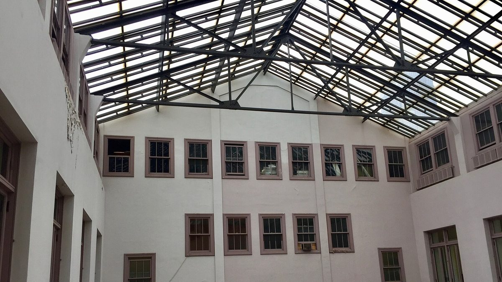

미국 클리블랜드 시영 전력, 여름 정전 뒤 요금 인상 요청…늘어난 수입으로 2028년 3,000만 달러 빌려 설비 개선

120년 된 시 소유 전력회사 CPP, 고정요금 신설·많이 쓸수록 비싼 요금 구조 제안…지역 재생에너지 직접 생산도 전략계획에, 시의회 "개선 일정 없인 승인 어려워"
미국 오하이오주 클리블랜드시가 소유한 전력회사 클리블랜드 퍼블릭 파워(CPP)가 올여름 잇따른 정전 뒤 낡은 설비를 고치겠다며 전기요금 인상을 시의회에 요청했다. 저스틴 비브(Justin Bibb) 시장 행정부는 10월 29일 시의회 위원회 회의에서 전략계획과 요금안을 내놓고, 쓰는 양이 많을수록 kWh당 요금이 높아지는 구조로 바꾸면서 청구 때마다 붙는 고정요금을 새로 만들어 3년에 걸쳐 올리겠다고 밝혔다. 의회가 승인하면 추가 수입은 2027년 600만 달러, 2028년 700만 달러, 2029년 500만 달러이며, 시는 이를 바탕으로 2028년 3,000만 달러를 빌려 설비에 투자할 계획이다. 여름철 월 200kWh를 쓰는 가구는 2028년 요금이 3.60달러, 800kWh를 쓰는 가구는 8.92달러 오른다. 120년 된 CPP는 고객 7만4,000곳에 전기를 공급하는데, 시가 사실상 비영리 기금으로 운영해 인건비·자재비·전력망에서 사 오는 전기값을 모두 요금으로 감당해야 하며, 시는 앞서 오래 미뤄 온 유지보수 탓에 2억5,000만 달러 넘는 개선이 필요하다고 밝힌 바 있다. 전략계획에는 변전소 재건, 지역 재생에너지로 직접 만드는 전력 늘리기, 정전 고객을 정확히 찾는 기술 개선이 담겼고, 마틴 킨(Martin Keane) 시 최고운영책임자가 "우리 모두 새롭고 더 나은 CPP를 원한다"고 말했지만, 탄메이 샤(Tanmay Shah) 의원은 돈이 어디에 쓰일지 모른 채 인상을 승인할 수는 없다고 했고 오스틴 데이비스(Austin Davis) 의원은 왜 더 크게 투자하지 않느냐고 물었다.
시민에너지 관점
주주 배당이 없는 시영 전력은 요금으로 걷은 돈이 설비로 돌아가지만, 투자를 미루면 그 값이 정전과 한꺼번에 오르는 요금으로 되돌아온다는 것을 클리블랜드가 보여 준다. 공공 소유라서 요금이 오른다는 비판이 나올 수 있으나, 고객 7만4,000곳의 요금안과 투자 일정을 주민이 뽑은 의원들이 공개 회의에서 직접 따질 수 있다는 것이 공공 소유의 힘이다. 다만 고정요금이 생기면 월 200kWh 가구의 2028년 인상액(3.60달러)이 네 배를 쓰는 800kWh 가구(8.92달러)의 40%에 이르듯 적게 쓰는 가구의 부담이 상대적으로 커질 수 있어, 요금 설계에도 주민 목소리가 들어가야 한다. 국내에서 지역 에너지를 공공과 주민이 소유하는 길을 열 때도 지역 재생에너지에 대한 투자 계획과 요금 원칙을 처음부터 주민 앞에 공개하는 구조를 함께 설계해야 한다.
출처: Signal Cleveland 2026-10-30 Nick Castele 원문 보기
米クリーブランドの市営電力、夏の停電後に料金値上げを要請…増収分を元手に2028年に3,000万ドルを借り入れ設備改修
120年の歴史を持つ市有電力会社CPP、固定料金の新設と使うほど割高になる料金体系を提案…地域の再生可能エネルギーによる自家発電も戦略計画に、市議会「改善の日程なしに承認は難しい」
米オハイオ州クリーブランド市が所有する電力会社クリーブランド・パブリック・パワー（CPP）が、今夏相次いだ停電を受けて老朽設備を改修するとして、電気料金の値上げを市議会に要請した。ジャスティン・ビブ（Justin Bibb）市長の行政府は10月29日の市議会委員会で戦略計画と料金案を示し、使用量が多いほどkWh当たりの料金が高くなる体系に改め、請求ごとにかかる固定料金を新設して3年かけて引き上げると説明した。議会が承認すれば増収分は2027年に600万ドル、2028年に700万ドル、2029年に500万ドルとなり、市はこれを元手に2028年に3,000万ドルを借り入れて設備に投資する計画だ。夏場に月200kWhを使う世帯は2028年に料金が3.60ドル、800kWhを使う世帯は8.92ドル上がる。120年の歴史を持つCPPは7万4,000件の顧客に電気を供給しているが、市は事実上の非営利会計（企業会計基金）として運営しており、人件費や資材費、送電網から買う電気代をすべて料金で賄わなければならず、市は以前、長年先送りしてきた保守のため2億5,000万ドルを超える改修が必要だと明らかにしていた。戦略計画には変電所の再建、地域の再生可能エネルギーによる自前の発電の拡大、停電の影響を受けた顧客を正確に把握する技術の改善が盛り込まれ、マーティン・キーン（Martin Keane）市最高執行責任者は「私たちは皆、新しくより良いCPPを望んでいる」と述べたが、タンメイ・シャー（Tanmay Shah）議員は資金の使い道が分からないまま値上げは承認できないとし、オースティン・デービス（Austin Davis）議員はなぜもっと大きく投資しないのかと問いただした。
市民エネルギーの視点
株主配当のない市営電力は、料金で集めたお金が設備に戻る一方、投資を先送りすればその代償が停電と一気に上がる料金になって返ってくることをクリーブランドは示している。公営だから料金が上がるという批判もありうるが、7万4,000件の顧客の料金案と投資日程を、住民が選んだ議員が公開の会議で直接ただせることこそ公的所有の強みだ。ただ、固定料金ができれば、月200kWh世帯の2028年の値上げ額（3.60ドル）が4倍を使う800kWh世帯（8.92ドル）の4割に達するように、使用量の少ない世帯の負担が相対的に重くなりうるため、料金設計にも住民の声を反映させる必要がある。韓国で地域エネルギーを公共と住民が所有する道を開く際にも、地域の再生可能エネルギーへの投資計画と料金の原則を最初から住民に公開する仕組みを合わせて設計すべきだ。
出典: Signal Cleveland 2026-10-30 ニック・カステル（Nick Castele） 原文を読む
美国克利夫兰市营电力公司在夏季停电后申请涨价…以增收为基础2028年借款3,000万美元改造设施
拥有120年历史的市属电力公司CPP提议新设固定费并实行用电越多单价越高的结构…以本地可再生能源自行发电也写入战略计划，市议会称“没有改善时间表难以批准”
美国俄亥俄州克利夫兰市所属的电力公司克利夫兰公共电力（CPP）在今年夏天接连停电之后，以改造老旧设施为由向市议会申请上调电价。贾斯汀·比布（Justin Bibb）市长的市政府在10月29日的市议会委员会会议上提出战略计划和电价方案，表示将改为用电越多每千瓦时电价越高的结构，并新设每个计费周期收取的固定费，在3年内逐步上调。若议会批准，新增收入2027年为600万美元、2028年为700万美元、2029年为500万美元，市政府计划以此为基础在2028年借款3,000万美元投资设施。夏季每月用电200千瓦时的家庭2028年电费将增加3.60美元，用电800千瓦时的家庭将增加8.92美元。拥有120年历史的CPP为7万4,000个客户供电，市政府实际上把它作为非营利性的企业基金运营，人工、材料以及从电网购电的费用都要靠电费来承担；市政府此前曾表示，由于长期推迟维护，需要超过2亿5,000万美元的改造。战略计划包括重建变电站、扩大以本地可再生能源自行发电、改进精准识别停电受影响客户的技术等；市首席运营官马丁·基恩（Martin Keane）说“我们都希望有一个全新的、更好的CPP”，但议员坦梅·沙阿（Tanmay Shah）表示，不清楚资金用途就无法批准涨价，议员奥斯汀·戴维斯（Austin Davis）则追问为何不进行更大规模的投资。
市民能源视角
没有股东分红的市营电力公司，收来的电费会回到设施上，但克利夫兰的例子说明，一旦推迟投资，代价就会以停电和一次性大幅涨价的形式回来。或许有人批评公有导致涨价，但7万4,000个客户的电价方案和投资时间表能由居民选出的议员在公开会议上直接质询，这正是公有制的力量。不过，新设固定费后，每月200千瓦时家庭2028年的涨幅（3.60美元）达到用电量是其4倍的800千瓦时家庭（8.92美元）的40%，用电少的家庭负担可能相对加重，因此电价设计也应听取居民意见。韩国在开辟由公共部门和居民共同拥有地方能源的道路时，也应同时设计从一开始就向居民公开本地可再生能源投资计划和电价原则的机制。
来源: Signal Cleveland 2026-10-30 尼克·卡斯特尔（Nick Castele） 查看原文
Cleveland's city-owned utility seeks rate increase after summer outages, plans to borrow $30 million in 2028 for upgrades
120-year-old Cleveland Public Power proposes a new fixed charge and higher per-kWh rates for heavier users; strategic plan includes more local renewable generation, while council members say they cannot approve rates without a timeline
Cleveland Public Power (CPP), the electric utility owned by the city of Cleveland, Ohio, has asked City Council to raise electric rates so it can repair ageing equipment after a summer of repeated power outages. At a council committee meeting on October 29, Mayor Justin Bibb's administration presented a strategic plan and rate proposal that would charge more per kilowatt-hour to customers who use more power and introduce a fixed charge per billing period that rises over three years. If council approves, CPP would collect an additional $6 million in 2027, $7 million in 2028 and $5 million in 2029, and the city plans to use that revenue to borrow $30 million in 2028 for infrastructure. A household using 200kWh a month in summer would pay $3.60 more in 2028, and one using 800kWh would pay $8.92 more. The 120-year-old utility serves 74,000 customers and is run by the city essentially as a nonprofit enterprise fund, so workers, materials and power bought from the grid must all be covered by rates, and the city has previously said deferred maintenance has left it needing more than $250 million in upgrades. The plan includes rebuilding substations, generating more power locally from renewable energy and better technology to identify customers hit by outages; chief operating officer Martin Keane said "we all know that we want a new and better CPP," but Council Member Tanmay Shah said rates could not be approved without knowing where the money would go, and Council Member Austin Davis asked why the city was not aiming for a bigger investment.
Citizen Energy View
A city utility with no shareholders to pay puts rate revenue back into its equipment, but Cleveland shows that when investment is postponed, the bill comes back as outages and a sudden jump in rates. Some will say public ownership drives prices up, yet the fact that elected council members can question the rates and investment schedule for 74,000 customers in an open meeting is precisely the strength of public ownership. A new fixed charge, however, means a 200kWh household's 2028 increase ($3.60) reaches 40% of that of an 800kWh household ($8.92) using four times as much power, so lighter users may carry a relatively heavier load, and residents need a voice in rate design too. As Korea opens paths for public and resident ownership of local energy, investment plans for local renewables and the principles behind rates should be laid out before residents from the very start.
Source: Signal Cleveland 2026-10-30 Nick Castele Read the original